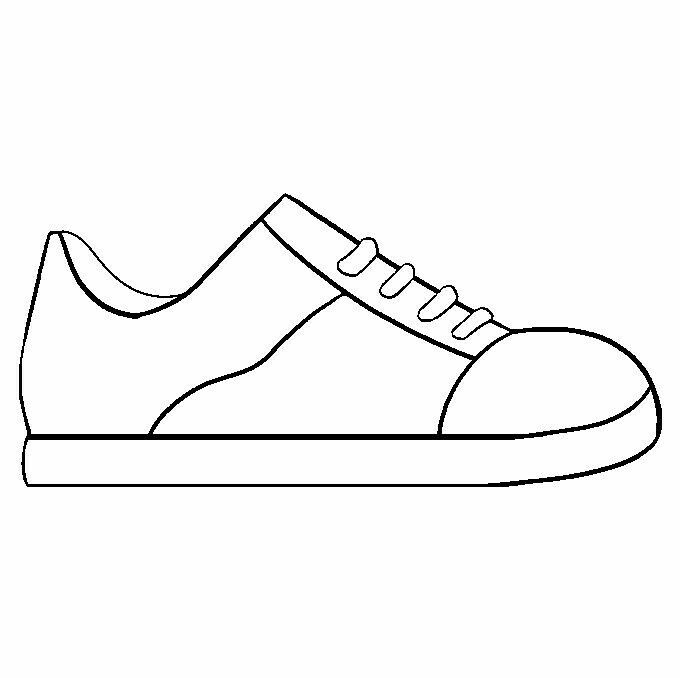

Discover our latest collection of high-performance footwear designed to deliver exceptional comfort, durability and style.
Browse products, add items to your cart and complete a checkout flow while exploring how Google Tag Manager can be used to track customer interactions across an e-commerce journey.
This demo site has been created specifically for testing analytics, event tracking, conversions and marketing tags.
View Product